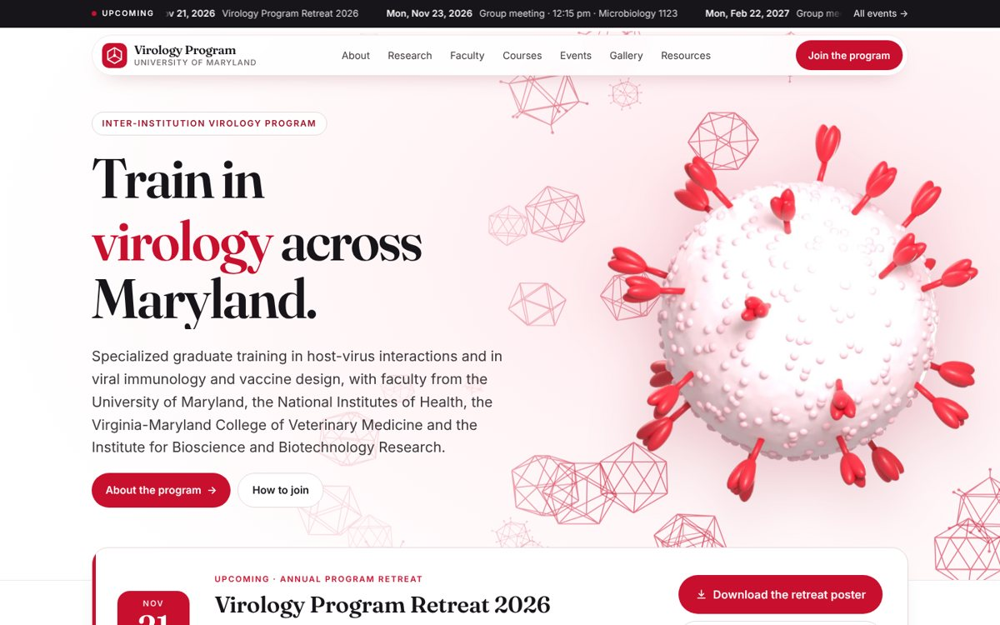
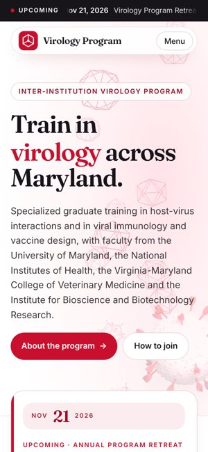
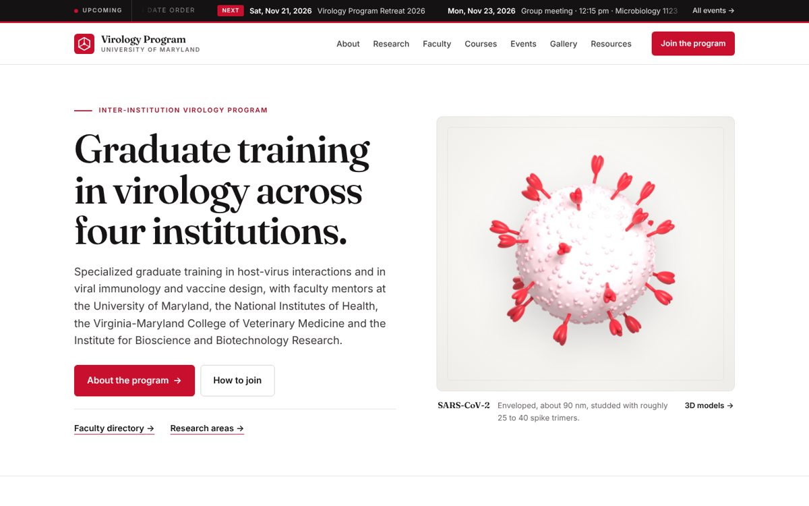
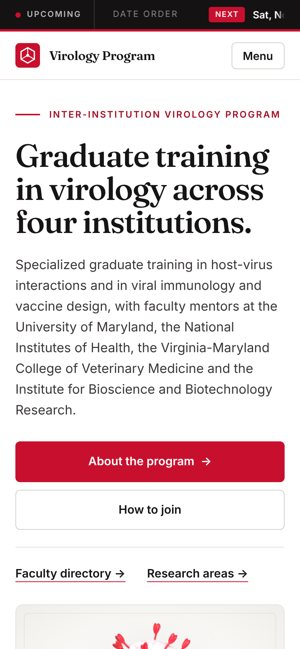
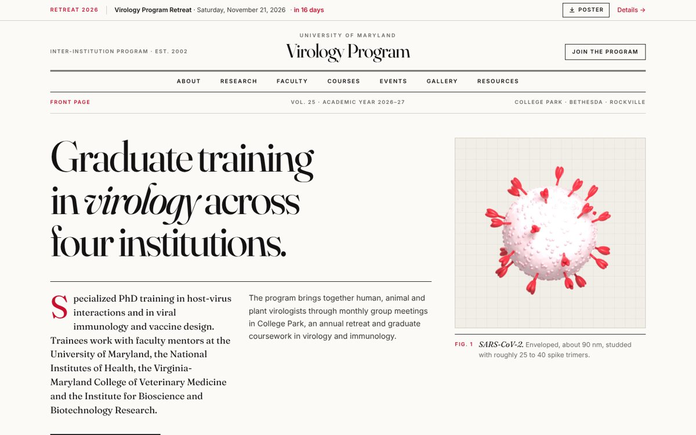
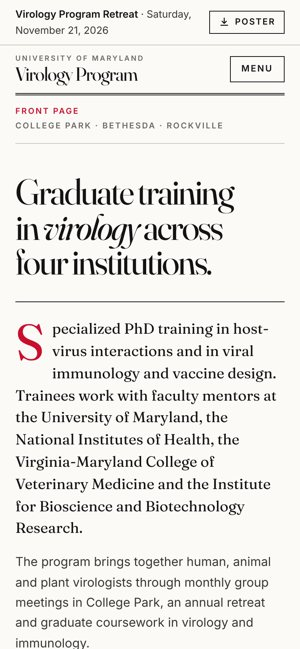
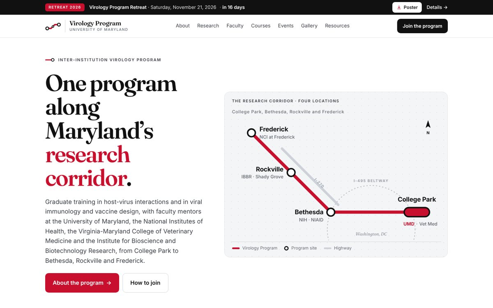
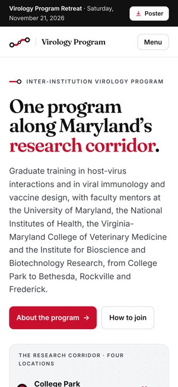
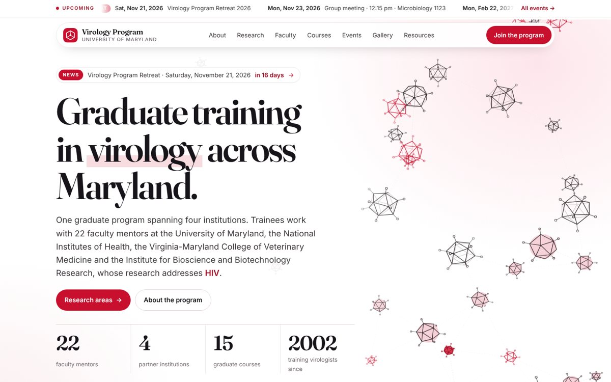
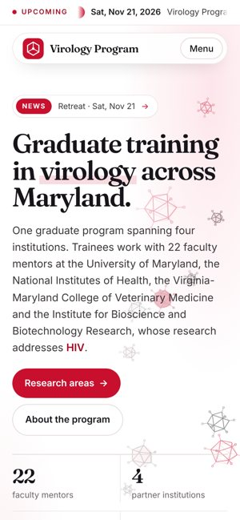

Design 1
Living Capsids
White and soft rose with 3D virus models, animated capsids and a floating header.
5 design options for the new Virology Program website.


White and soft rose with 3D virus models, animated capsids and a floating header.


Clean and institutional, with warm grey sections and red accents.


Editorial layout inspired by scientific journals, with large serif headings.


A transit-map line linking College Park, Bethesda, Rockville and Frederick.

